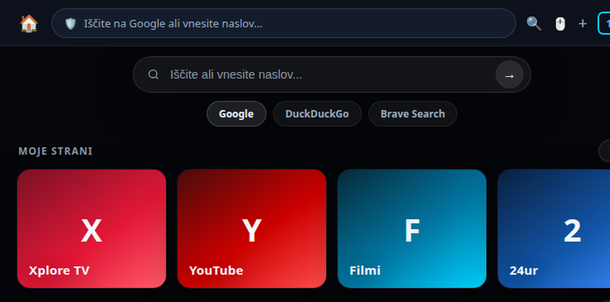

Zasnovan iz ničle za udobno gledanje na velikem zaslonu. Prinaša gladko 60 FPS D-Pad navigacijo s smernikov daljinca, barvne gumbe za takojšen skok na priljubljene postaje, strojno pospešen 4K predvajalnik in popolno podporo za zvočne letve (JBL, Sony, Philips).

Standardni spletni brskalniki na televizorjih zahtevajo počasno premikanje navidezne miške. Safeer TV to odpravlja z inteligentnim fokusnim sistemom.
Vsak element se ob premiku smeri na daljincu jasno osvetli z neonskim obrobom. Zanesljiv skok med karticami z natanko enim pritiskom tipke.
Video pretočne vsebine se predvajajo prek nativnega predvajalnika ExoPlayer s strojnim pospeševanjem na ravni procesorja televizorja.
Preprečuje utripanje zvoka in ponastavitve HDMI-eARC avdio dekoderja na zvočnih letvah (npr. JBL Bar 300, Sony, Philips).
| Funkcionalnost | 🛡️ Safeer TV & StreamNexus | Običajni TV brskalniki | Google Chrome (Sideload) |
|---|---|---|---|
| Krmiljenje z navadnim daljincem | ✓ 60 FPS D-Pad fokus | ✗ Počasna navidezna miška | ✗ Neuporabno brez miške |
| Blokada video oglasov na YouTube | ✓ 0 oglasov | ✗ Oglasi se predvajajo | ✗ Brez blokiranja |
| Predvajalnik pretočnih vsebin | ✓ Nativni Media3 ExoPlayer | Standardni WebView | WebView |
| Hitre barvne tipke (Rdeča, Rumena, Modra) | ✓ Da (takojšen skok) | ✗ Ne | ✗ Ne |
Datoteko lahko namestite prek USB ključka z upraviteljem datotek (npr. File Commander / X-plore) ali prek brezžičnega ADB ukaza.
Safeer je na voljo tudi za osebne računalnike in mobilne naprave: